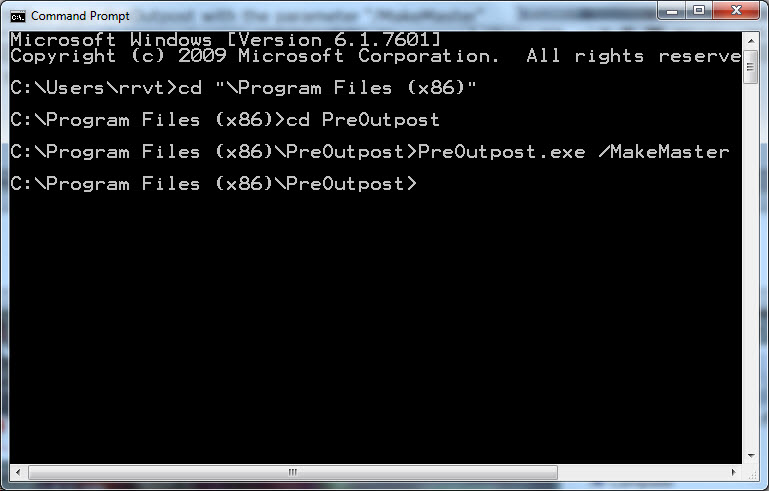
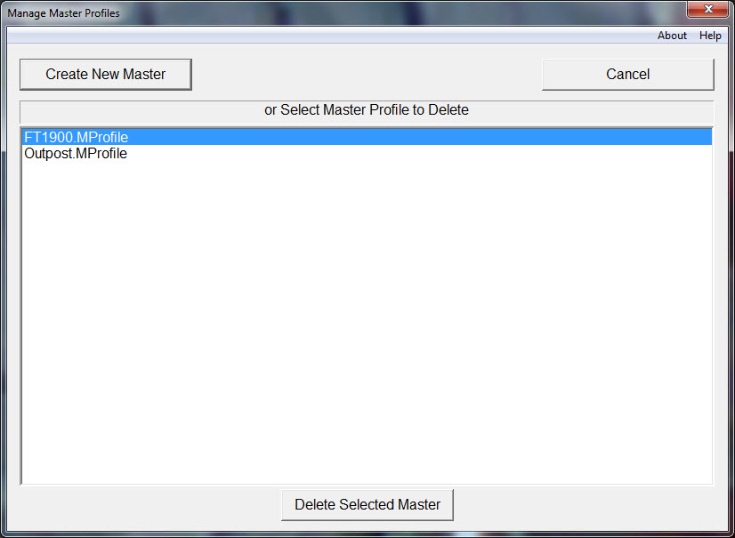

Creating a Master Profile
|  |
| Fig. 6 -- Starting PreOutpost in a Command Prompt (DOS Box) |
Creating a Master Profile is more difficult than using PreOutpost to collect identity and report information. This is deliberate. The whole point of PreOutpost is to preserve a profile that works.
The first step is to enter Outpost and create a working profile for the modem/radio configuration. Test it thoroughly with one of the BBSes (it doesn’t matter which). Be sure to name the profile with some identifier that indicates the modem/radio combination. Keep the name short (I’ve noticed that on some laptops the Profile name edit box is short). Exit Outpost.
Then start a DOS box in your computer (In Task Bar Search box search for Command Prompt). Change directory to the directory in which PreOutpost.exe is located, “C:\Program Files (x86)\PreOutpost\”. In later version I've include a change to the system path variable to include the PreOutpost directory. If the change was successful on your computer then just typing PreOutpost at the prompt should yield a help output. If the help output appears then one can proceed use the command line switch as described below.
|  |
| Fig. 7 -- Create a New Master, Delete an Existing Master or Abort |
In the DOS Box start PreOutpost with the parameter “/MakeMaster” (see Figure 6). At that point a dialog box will appear that will give the user one of three options: Create a new Master Profile, Delete an existing Master profile or Cancelling the operation (see Figure 7).
There is one special case for creating a Master Profile. If there are no Master Profiles present then PreOutpost starts the Make Master process.